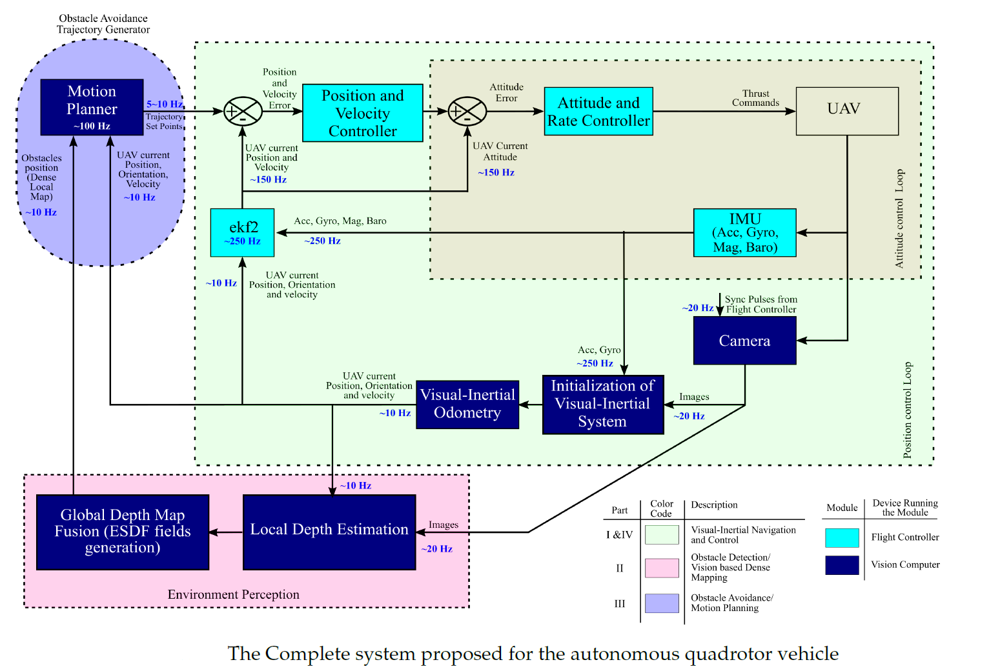
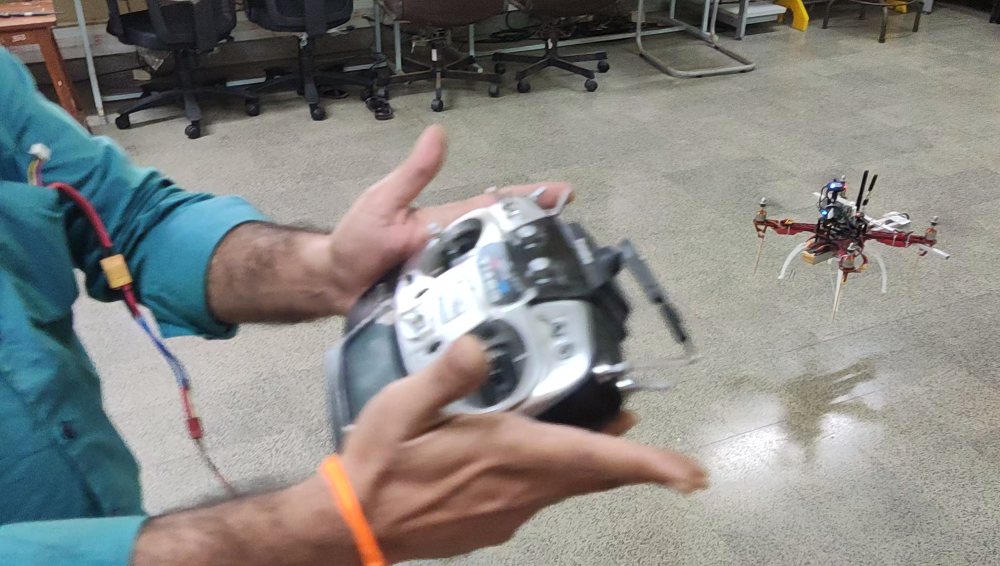

Bharadwaja Yathirajam:
About
Received Master’s degree in Embedded Systems in 2010 and Bachelor’s degree in Electronics and Communication Engineering in 2008 from Jawaharlal Nehru Technological University (JNTU), Anantapuramu, India and JNTU-Hyderabad, India respectively. He is currently working for his PhD degree program affiliated to Academy of Scientific and Innovative Research (AcSIR), Ghaziabad, India and department of Aerospace Electronics and Systems Division at CSIR-National Aerospace Laboratories (CSIR-NAL), Bangalore, India. His research areas include Computer Vision and Robotics with following problems of interest - Visual-SLAM/Odometry, Path Planning and Dense Mapping for autonomous aerial robots.
PhD Thesis: [thesis]
Autonomous system develop during the research work is given below

The real-time experiment with the above system is given in the below link

List of Publications:
- Bharadwaja, Y., Vaitheeswaran, S. M., & Ananda, C. M. (2017). Obstacle Avoidance for Unmanned Air Vehicles Using Monocular-SLAM with Chain-Based Path Planning in GPS Denied Environments. Proceedings of ICTACEM 2017. International Conference on Theoretical, Applied, Computational and Experimental, IIT Kharagpur.
- Bharadwaja Y., Vaitheeswaran S. M., and Ananda C. M. (2019). Scale Estimation of Monocular SLAM Using Direct Acceleration Pair Measurements. In Proceedings of the Advances in Robotics 2019 (AIR 2019). Association for Computing Machinery, New York, NY, USA, Article 36, 1–7. https://doi.org/10.1145/3352593.3352630
- Bharadwaja, Y., Vaitheeswaran, S. M., & Ananda, C. M. (2020). Obstacle Avoidance for Unmanned Air Vehicles Using Monocular-SLAM with Chain-Based Path Planning in GPS Denied Environments. Journal of Aerospace System Engineering, 14(2), 1–11. https://doi.org/10.20910/JASE.2020.14.2.1
- Bharadwaja Y., Vaitheeswaran S. M. & Ananda C. M. (2021). An Efficient Approach to Initialization of Visual-Inertial Navigation System using Closed-Form Solution for Autonomous Robots. Journal of Intelligent & Robotic Systems, 101, 59. https://doi.org/10.1007/s10846-021-01313-5
- Bharadwaja Y., Vaitheeswaran S. M. & Ananda C. M. (2022) Superpixels using Binary Images for Monocular Visual-Inertial Dense Mapping. Journal of Signal Processing Systems. https://doi.org/10.1007/s11265-022-01754-7
CV: [thesis]